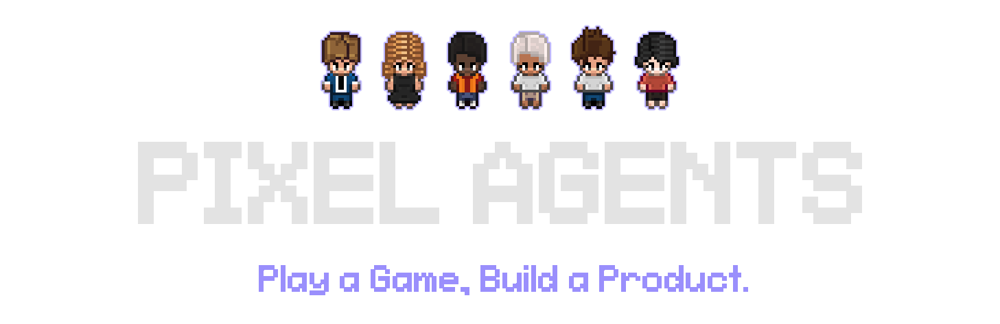

VS Code extension
Extension Development Host 또는 설치된 확장 안에서 panel webview로 실행됩니다.
에이전트를 새 terminal에 시작하고, VS Code 상태 저장소와
postMessage transport를 사용합니다.
adapters/vscode

PLAY A GAME, BUILD A PRODUCT · v1.4.0
터미널에서 일하는 Claude Code 세션을 관찰해, 읽기·쓰기·도구 실행·승인 대기·팀 활동을 작은 오피스의 캐릭터 행동으로 표현합니다.
01 / THE PROJECT
Pixel Agents는 코딩 에이전트의 판단이나 도구 결과를 바꾸지 않습니다.
Claude Code가 이미 내보낸 hook event와 JSONL transcript를 관찰하고,
이를 공통 AgentEvent로 정규화해 캐릭터의 활동 상태로 표현합니다.
쓰기 도구를 사용하면 책상에서 타이핑하고, 읽기 도구를 사용하면 읽는 동작을 하며,
입력이나 승인이 필요하면 말풍선을 띄웁니다.
핵심 제품은 픽셀 아트가 아니라, 보이지 않던 여러 에이전트의 상태를 한 화면의 공간적 문법으로 바꾸는 런타임입니다.
TWO PRODUCT SURFACES
Extension Development Host 또는 설치된 확장 안에서 panel webview로 실행됩니다.
에이전트를 새 terminal에 시작하고, VS Code 상태 저장소와
postMessage transport를 사용합니다.
adapters/vscode
npx pixel-agents가 Fastify 서버와 정적 React 앱을 열고,
브라우저는 WebSocket으로 같은 메시지 계약을 소비합니다.
Claude 자체는 별도 terminal에서 사용자가 실행합니다.
server/src/cli.ts
02 / OBSERVATION
기본 경로는 Claude Code hook입니다. 설치된 hook script가
SessionStart, PreToolUse, PermissionRequest,
Stop 같은 event를 로컬 서버로 POST합니다.
JSONL transcript 감시는 hook이 주지 않는 안정적인 tool ID, 진행 정보와
외부 세션 탐색을 보완합니다.
원시 Claude 필드인 tool_name, tool_input,
agent_type은 provider 경계에서만 읽습니다.
이후 런타임은 toolStart, toolEnd,
turnEnd, permissionRequest 같은 공통 event만 다룹니다.
Claude → claude-hook.js → HTTP POST
~/.claude/projects/**.jsonl
근거: claude.ts · transcriptParser.ts
03 / RUNTIME PIPELINE
provider별 입력은 정규화 이후 하나의 lifecycle core로 들어갑니다.
VS Code와 standalone은 host transport만 다르고,
webview가 받는 ServerMessage와 오피스 엔진은 같습니다.
session ID를 agent ID에 연결하고, agent 등록보다 먼저 도착한 event를 잠시 buffer합니다.
hook handler, file watcher, stale session scan, permission·waiting timer와 제거 순서를 공유합니다.
현재 agent state를 보유하고 host adapter와 WebSocket client에 typed message를 broadcast합니다.
04 / PROTOCOL
wire contract의 원전은 core/asyncapi.yaml입니다.
생성된 ServerMessage에는 agent 생성·종료, tool 시작·완료,
permission, team metadata, token usage, layout과 asset load가 포함됩니다.
반대 방향의 ClientMessage는 agent 실행·focus·종료,
layout 저장, 설정과 asset directory 변경을 표현합니다.
VS Code는 항상 연결된 PostMessageTransport를 사용하고,
standalone은 연결 상태와 재접속, 전송 대기 queue를 가진
WebSocketTransport를 사용합니다.
toolStart · toolEnd
turnEnd(awaitingInput?)
permissionRequest
sessionStart · sessionEnd
subagentStart · subagentEnd
subagentTurnEnd(idle | completed)05 / TEAM & SUBAGENT
Task 또는 일반 Agent tool에 묶인 임시 캐릭터입니다.
parent tool ID를 identity로 사용하고 tool이 끝나면 함께 정리됩니다.
background teammate spawn과 Claude team metadata를 확인해 별도 agent로 연결합니다. lead, teammate name, team lifecycle을 유지하며 한 turn의 tool 정리와 분리합니다.
background Agent 호출이 실제 teammate인 경우에는 일반 subagent 캐릭터를 동시에 만들지 않습니다.
같은 tool 이름이라도 run_in_background와 team metadata를 함께 봅니다.
근거: TeamProvider · Claude team implementation · webview routing
06 / OFFICE ENGINE
오피스는 DOM sprite 목록이 아니라 매 frame 갱신되는 Canvas 2D scene입니다.
requestAnimationFrame loop가 OfficeState.update()와
renderFrame()을 호출합니다. 16px tile grid에서 wall·void·furniture를
피하는 4방향 BFS pathfinding으로 자리와 이동 경로를 계산합니다.
캐릭터 상태는 IDLE, WALK, TYPE 세 가지입니다.
agent가 active가 되면 지정된 seat로 이동하고, 현재 tool이 읽기 계열이면
typing 대신 reading sprite를 사용합니다. idle 상태에서는 오피스를 돌아다니다 쉽니다.
근거: gameLoop.ts · tileMap.ts · characters.ts
07 / PRODUCT SURFACES



08 / LAYOUT & ASSETS
layout은 tile, furniture, 색상과 크기를 가진 JSON으로 직렬화됩니다. editor는 floor·wall·carpet·furniture·pet·area를 편집하고 undo/redo와 import/export를 지원합니다. map은 최대 64×64 tile까지 확장됩니다.
external asset directory의 manifest는 sprite file, footprint, 회전·상태·animation group과 배치 제약을 기술합니다. Workspace Area는 folder 이름을 색칠된 office zone에 연결하고 agent의 seat 배치에 사용됩니다.
09 / TRUTH BOUNDARY
10 / READING ORDER
원시 CLI event가 어떤 공통 AgentEvent가 되는지 확인합니다.
Claude hook field를 읽는 유일한 provider 경계를 봅니다.
서버 registry와 여러 실행 표면으로의 fan-out을 추적합니다.
session ID mapping, pending external session과 event buffer를 읽습니다.
VS Code와 standalone이 공유하는 watcher·timer·cleanup을 확인합니다.
host와 webview 사이의 message source of truth를 봅니다.
typed message가 UI state와 character call로 바뀌는 지점입니다.
character, seat, team, pet, bubble와 camera state를 읽습니다.
activity가 IDLE·WALK·TYPE 전이로 바뀌는 과정을 봅니다.
zoom, pan, editor interaction과 frame rendering을 연결합니다.
11 / RUN & SOURCE
가장 간단한 경로는 VS Code Marketplace 확장입니다. standalone은 Node.js 20 이상에서 프로젝트 디렉터리에서 실행하고, 같은 workspace의 Claude Code는 별도 terminal에서 시작합니다.
cd /path/to/project
npx pixel-agents프로젝트 코드는 Pablo De Lucca의 MIT License를 따릅니다. bundled character는 README에 명시된 JIK-A-4 Metro City 작업을 기반으로 하며, 외부 asset pack은 각 원저작자의 라이선스를 별도로 확인해야 합니다. 이 페이지는 공개 포크의 한국어 소스 해설이며 upstream의 공식 문서는 아닙니다.